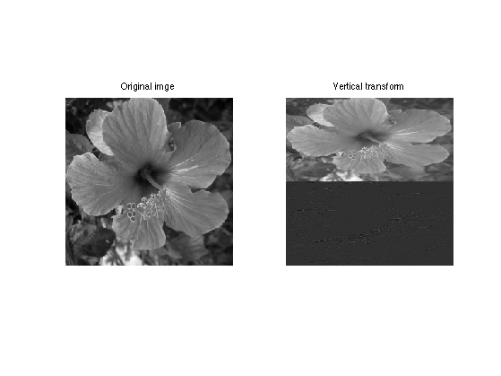
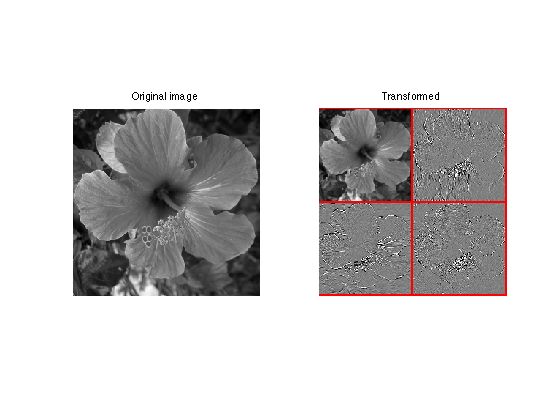
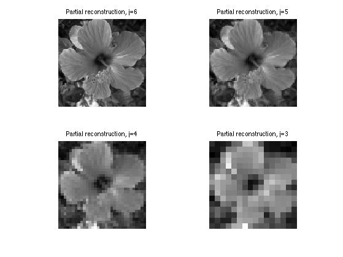
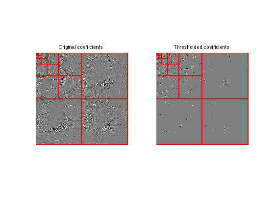
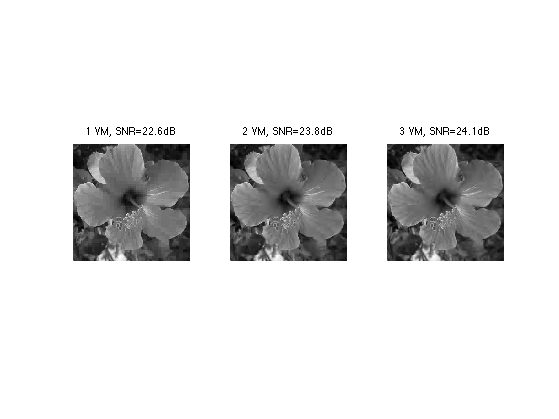
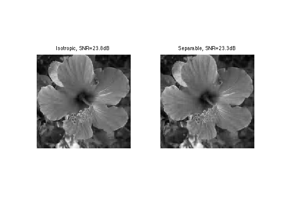
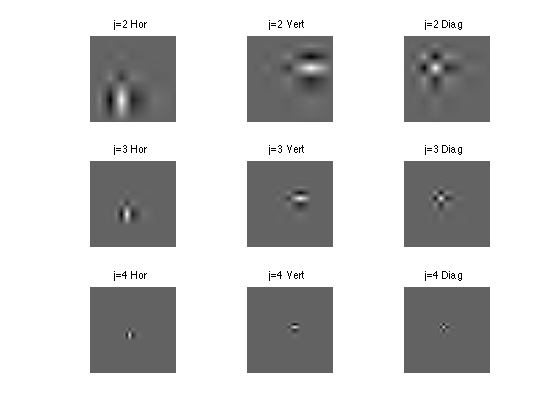
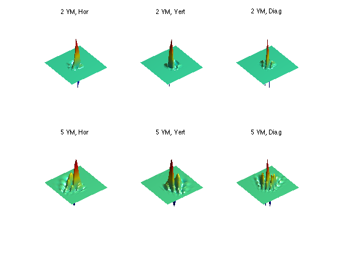

2-D Daubechies Wavelets
This numerical tour explores 2-D multiresolution analysis with Daubchies wavelet transform.
Contents
Installing toolboxes and setting up the path.
You need to download the following files: signal toolbox and general toolbox.
You need to unzip these toolboxes in your working directory, so that you have toolbox_signal and toolbox_general in your directory.
For Scilab user: you must replace the Matlab comment '%' by its Scilab counterpart '//'.
Recommandation: You should create a text file named for instance numericaltour.sce (in Scilab) or numericaltour.m (in Matlab) to write all the Scilab/Matlab command you want to execute. Then, simply run exec('numericaltour.sce'); (in Scilab) or numericaltour; (in Matlab) to run the commands.
Execute this line only if you are using Matlab.
getd = @(p)path(p,path); % scilab users must *not* execute this
Then you can add the toolboxes to the path.
getd('toolbox_signal/'); getd('toolbox_general/');
Wavelets Filters
The 2-D wavelet transform of a continuous image \(f(x)\) computes the set of inner products \[ d_j^k[n] = \dotp{f}{\psi_{j,n}^k} \] for scales \( j \in \ZZ \), position \( n \in \ZZ^2 \) and orientation \( k \in \{H,V,D\} \).
The wavelet atoms are defined by scaling and translating three mother atoms \( \{\psi^H,\psi^V,\psi^D\} \): \[ \psi_{j,n}^k(x) = \frac{1}{2^j}\psi^k\pa{\frac{x-2^j n}{2^j}} \] These oriented wavelets are defined by a tensor product of a 1-D wavelet function \(\psi(t)\) and a 1-D scaling function \(\phi(t)\) \[ \psi^H(x)=\phi(x_1)\psi(x_2), \quad \psi^V(x)=\psi(x_1)\phi(x_2) \qandq \psi^D(x)=\psi(x_1)\psi(x_2).\]
The fast wavelet transform algorithm does not make use of the wavelet and scaling functions, but of the filters \(h\) and \(g\) that caracterize their interaction: \[ g[n] = \frac{1}{\sqrt{2}}\dotp{\psi(t/2)}{\phi(t-n)} \qandq h[n] = \frac{1}{\sqrt{2}}\dotp{\phi(t/2)}{\phi(t-n)}. \]
The simplest filters are the Haar filters \[ h = [1, 1]/\sqrt{2} \qandq g = [-1, 1]/\sqrt{2}. \]
Daubechies wavelets extends the haar wavelets by using longer filters, that produce smoother scaling functions and wavelets. Furthermore, the larger the size \(p=2k\) of the filter, the higher is the number \(k\) of vanishing moment.
A high number of vanishing moments allows to better compress regular parts of the signal. However, increasing the number of vanishing moments also inceases the size of the support of the wavelets, wich can be problematic in part where the signal is singular (for instance discontinuous).
Choosing the best wavelet, and thus choosing \(k\), that is adapted to a given class of signals, thus corresponds to a tradeoff between efficiency in regular and singular parts.
- The filter with \(k=1\) vanishing moments corresponds to the Haar filter.
- The filter with \(k=2\) vanishing moments corresponds to the famous D4 wavelet, which compresses perfectly linear signals.
- The filter with \(k=3\) vanishing moments compresses perfectly quadratic signals.
Set the support size. To begin, we select the D4 filter.
p = 4;
Create the low pass filter \(h\) and the high pass \(g\). We add a zero to ensure that it has a odd length. Note that the central value of \(h\) corresponds to the 0 position.
[h,g] = compute_wavelet_filter('Daubechies',p);
Note that the high pass filter \(g\) is computed directly from the low pass filter as: \[g[n] = (-1)^{1-n}h[1-n]\]
Display.
disp(['h filter = [' num2str(h) ']']); disp(['g filter = [' num2str(g) ']']);
h filter = [0 0.48296 0.83652 0.22414 -0.12941] g filter = [0 -0.12941 -0.22414 0.83652 -0.48296]
Up and Down Filtering
The basic wavelet operation is low/high filtering, followed by down sampling.
Starting from some 1-D signal \(f \in \RR^N\), one thus compute the low pass signal \(a \in \RR^{N/2}\) and the high pass signal \(d \in \RR^{N/2}\) as \[ a = (f \star h) \downarrow 2 \qandq d = (f \star g) \downarrow 2\] where the sub-sampling is defined as \[ (u \downarrow 2)[k] = u[2k]. \]
Create a random signal \(f \in \RR^N\).
N = 256; f = rand(N,1);
Low/High pass filtering followed by sub-sampling.
a = subsampling( cconv(f,h) ); d = subsampling( cconv(f,g) );
For orthogonal filters, the reverse of this process is its dual (aka its transpose), which is upsampling followed by low/high pass filtering with the reversed filters and summing: \[ (a \uparrow h) \star \tilde h + (d \uparrow g) \star \tilde g = f \] where \(\tilde h[n]=h[-n]\) (computed modulo \(N\)) and \( (u \uparrow 2)[2n]=u[n] \) and \( (u \uparrow 2)[2n+1]=0 \).
Up-sampling followed by filtering.
f1 = cconv(upsampling(a),reverse(h)) + cconv(upsampling(d),reverse(g));
Check that we really recover the same signal.
disp(strcat((['Error |f-f1|/|f| = ' num2str(norm(f-f1)/norm(f))])));
Error |f-f1|/|f| = 5.452e-13
Forward 2-D Wavelet transform
The set of wavelet coefficients are computed with a fast algorithm that exploit the embedding of the approximation spaces \(V_j\) spanned by the scaling function \( \{ \phi_{j,n} \}_n \) defined as \[ \phi_{j,n}(x) = \frac{1}{2^j}\phi^0\pa{\frac{x-2^j n}{2^j}} \qwhereq \phi^0(x)=\phi(x_1)\phi(x_2). \]
The wavelet transform of \(f\) is computed by using intermediate discretized low resolution images obtained by projection on the spaces \(V_j\): \[ a_j[n] = \dotp{f}{\phi_{j,n}}. \]
First we load an image of \(N= n \times n\) pixels.
n = 256;
name = 'hibiscus';
f = load_image(name,n);
f = rescale( sum(f,3) );
The algorithm starts at the coarsest scale \( j=\log_2(n)-1 \)
j = log2(n)-1;
The first step of the algorithm perform filtering/downsampling in the horizontal direction.
\[ \tilde a_{j-1} = (a_j \star^H h) \downarrow^{2,H} \qandq \tilde d_{j-1} = (a_j \star^H g) \downarrow^{2,H}\]
Here, the operator \(\star^H\) and \(\downarrow^{2,H}\) are defined by applying \(\star\) and \(\downarrow^2\) to each column of the matrix.
The second step computes the filtering/downsampling in the vertical direction.
\[ a_{j-1} = (\tilde a_j \star^V h) \downarrow^{2,V} \qandq d_{j-1}^V = (\tilde a_j \star^V g) \downarrow^{2,V},\] \[ d_{j-1}^H = (\tilde d_j \star^V h) \downarrow^{2,V} \qandq d_{j-1}^D = (\tilde d_j \star^V g) \downarrow^{2,V}.\]
A wavelet transform is computed by iterating high pass and loss pass filterings with h and g, followed by sub-samplings. Since we are in 2-D, we need to compute these filterings+subsamplings in the horizontal and then in the vertical direction (or in the reverse order, it does not mind).
Initialize the transformed coefficients as the image itself and set the initial scale as the maximum one. fW will be iteratively transformated and will contains the coefficients.
fW = f;
Select the sub-part of the image to transform.
A = fW(1:2^(j+1),1:2^(j+1));
Apply high and low filtering+subsampling in the vertical direction (1st ooordinate), to get coarse and details.
Coarse = subsampling(cconv(A,h,1),1); Detail = subsampling(cconv(A,g,1),1);
Note: subsamplling(A,1) is equivalent to A(1:2:end,:) and subsamplling(A,2) is equivalent to A(:,1:2:end).
Concatenate them in the vertical direction to get the result.
A = cat3(1, Coarse, Detail );
Display the result of the vertical transform.
clf; imageplot(f,'Original imge',1,2,1); imageplot(A,'Vertical transform',1,2,2);
Apply high and low filtering+subsampling in the horizontal direction (2nd ooordinate), to get coarse and details.
Coarse = subsampling(cconv(A,h,2),2); Detail = subsampling(cconv(A,g,2),2);
Concatenate them in the horizontal direction to get the result.
A = cat3(2, Coarse, Detail );
Assign the transformed data.
fW(1:2^(j+1),1:2^(j+1)) = A;
Display the result of the horizontal transform.
clf; imageplot(f,'Original image',1,2,1); subplot(1,2,2); plot_wavelet(fW,log2(n)-1); title('Transformed')
Exercice 1: (check the solution) Implement a full wavelet transform that extract iteratively wavelet coefficients, by repeating these steps. Take care of choosing the correct number of steps.
exo1;

Check for orthogonality of the transform (conservation of energy).
disp(strcat(['Energy of the signal = ' num2str(norm(f(:)).^2)])); disp(strcat(['Energy of the coefficients = ' num2str(norm(fW(:)).^2)]));
Energy of the signal = 10863.2801 Energy of the coefficients = 10863.2801
Display the wavelet coefficients.
clf; subplot(1,2,1); imageplot(f); title('Original'); subplot(1,2,2); plot_wavelet(fW, 1); title('Transformed');

Inverse 2-D Wavelet transform.
Inversing the wavelet transform means retrieving a signal f1 from the coefficients fW. If fW are exactely the coefficients of f, then f=f1 up to machine precision.
Initialize the image to recover f1 as the transformed coefficient, and select the smallest possible scale.
f1 = fW; j = 0;
Select the sub-coefficient to transform.
A = f1(1:2^(j+1),1:2^(j+1));
Retrieve coarse and detail coefficients in the vertical direction (you can begin by the other direction, this has no importance).
Coarse = A(1:2^j,:); Detail = A(2^j+1:2^(j+1),:);
Undo the transform by up-sampling and then dual filtering.
Coarse = cconv(upsampling(Coarse,1),reverse(h),1); Detail = cconv(upsampling(Detail,1),reverse(g),1);
Recover the coefficient by summing.
A = Coarse + Detail;
Retrieve coarse and detail coefficients in the vertical direction (you can begin by the other direction, this has no importance).
Coarse = A(:,1:2^j); Detail = A(:,2^j+1:2^(j+1));
Undo the transform by up-sampling and then dual filtering.
Coarse = cconv(upsampling(Coarse,2),reverse(h),2); Detail = cconv(upsampling(Detail,2),reverse(g),2);
Recover the coefficient by summing.
A = Coarse + Detail;
Assign the result.
f1(1:2^(j+1),1:2^(j+1)) = A;
Exercice 2: (check the solution) Write the inverse wavelet transform that computes f1 from the coefficients fW. Compare f1 with f.
exo2;
Check that we recover exactly the original image.
disp(strcat((['Error |f-f1|/|f| = ' num2str(norm(f(:)-f1(:))/norm(f(:)))])));
Error |f-f1|/|f| = 8.6602e-12
Linear 2-D Wavelet Approximation
Linear approximation is performed by setting to zero the fine scale wawelets coefficients and then performing the inverse wavelet transform.
Here we keep only 1/16 of the wavelet coefficient, thus calculating an m term approximation with m=n^2/16.
eta = 4; fWLin = zeros(n,n); fWLin(1:n/eta,1:n/eta) = fW(1:n/eta,1:n/eta);
Exercice 3: (check the solution) Compute and display the linear approximation fLin obtained from the coefficients fWLin by inverse wavelet transform.
exo3;

Non-Linear 2-D Wavelet Approximation
A non-linear m-term approximation is obtained by keeping only the m largest coefficients, which creates the smallest possible error.
Removing the smallest coefficient, to keep the m-largest, is equivalently obtainedby thresholding the coefficients to set to 0 the smallest coefficients.
First select a threshold value (the largest the threshold, the more agressive the approximation).
T = .2;
Then set to 0 coefficients with magnitude below the threshold.
fWT = fW .* (abs(fW)>T);
Display thresholded coefficients.
clf; subplot(1,2,1); plot_wavelet(fW); axis('tight'); title('Original coefficients'); subplot(1,2,2); plot_wavelet(fWT); axis('tight'); title('Thresholded coefficients');
Exercice 4: (check the solution) Find the thresholds T so that the number m of remaining coefficients in fWT are m=n^2/16. Use this threshold to compute fWT and then display the corresponding approximation Mnlin of f. Compare this result with the linear approximation.
exo4;

Exercice 5: (check the solution) Try with Different kind of wavelets, with an increasing number of vanishing moments.
exo5;
Separable 2-D Wavelet Transform
A forward wavelet transform is obtained by applying the 1D wavelet transform to
Exercice 6: (check the solution) Implement the foward separable transform. Wavelet transformm in 1D each column f(:,i) to obtain coefficients fWSep(:,i). Then re-transform each row fWSep(i,:)', and store the result in fW(i,:)'.
exo6;
Display the result.
clf; subplot(1,2,1); opt.separable = 0; plot_wavelet(fW,1,opt); title('Isotropic wavelets'); subplot(1,2,2); opt.separable = 1; plot_wavelet(fWSep,1,opt); title('Separable wavelets');

Exercice 7: (check the solution) Implement the backward separable transform to recover an image f1 from the coefficients fWSep, which backward transform each row and then each columns.
exo7;
Check that we recover exactly the original image.
disp(strcat((['Error |f-f1|/|f| = ' num2str(norm(f(:)-f1(:))/norm(f(:)))])));
Error |f-f1|/|f| = 7.6115e-12
Exercice 8: (check the solution) Perform m=n^2/16-terms best approximation with separable wavelet transform. Compare the result with isotropic wavelet approximation.
exo8;
The Shape of a Wavelet
An isotropic wavelet coefficient fW[k] corresponds to an inner product f,psi_{j,p}^s where k depends on the scale j and the position p and the orientation s (horizontal, vertical or diagonal).
The wavelet image f1 = psi_{j,p} is computed by applying the inverse wavelet transform to fW where fW[k]=1 and fW[l]=0 for l \neq k.
Exercice 9: (check the solution) Compute wavelets at several scales and orientation. Here we show only horizontal wavelets, in 2-D.
exo9;
Exercice 10: (check the solution) Display Daubechies wavelets with different orientation, for different number of VM.
exo10;